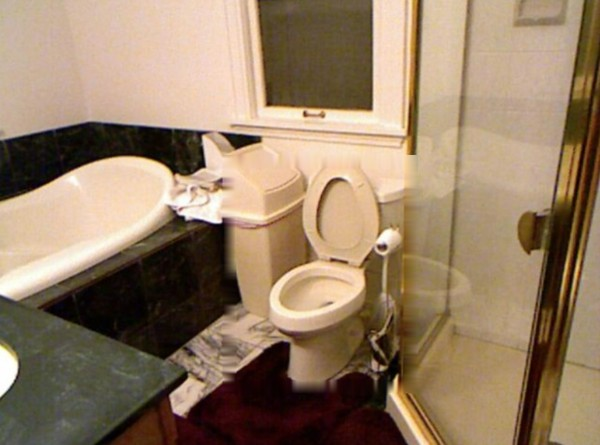
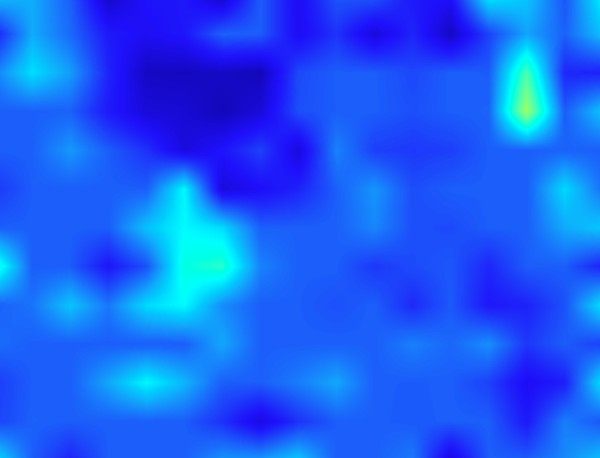
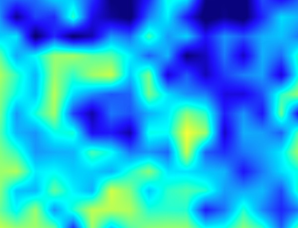

DepthCLIP: the same depth bins for every room
Ours: depth bins learned per scene, from just 1 image each



input image
DepthCLIP depth
Ours depth
depth bins (m)
giant
unseen
ours · one row per scene
NYU V2 · MARE ↓
DepthCLIP
· 0-shot
0.388
Ours
0.347
−10.6%
lower is better
1 image
per scene
→
its own depth bins